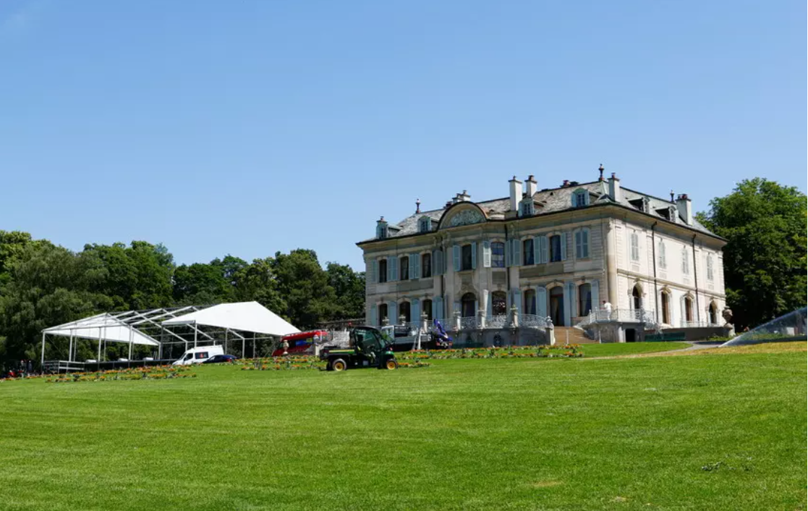
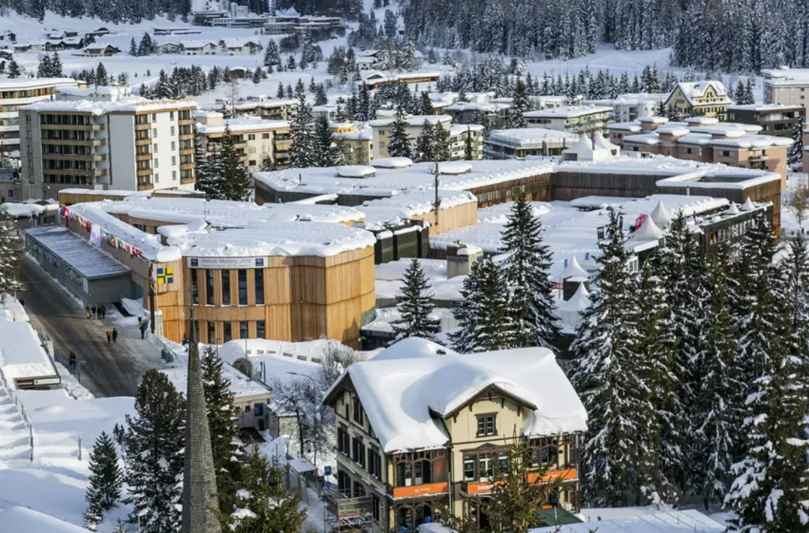

Jet d'Eau fountain in Lac Leman ahead of the June 16 summit between US President Joe Biden and Russian President Vladimir Putin in Geneva, Switzerland. Image: REUTERS/Denis Balibouse
US President Joe Biden and Russian President Vladimir Putin will meet in Geneva, Switzerland, this week in what will be their first face-to-face meeting since Biden’s election and Putin's first trip abroad since the start of the pandemic.
Almost 36 years after the first US-Russia summit in the city, the discussions could serve as a critical moment in reviving relations between the two countries. The meeting also places Geneva under the spotlight as the heart of international diplomacy.
Why did the two parties choose Switzerland?
Switzerland has been neutral for more than 200 years. Neutrality is a status that enables the small landlocked country of fewer than 9 million people to be an important mediator of international disputes and a trusted diplomatic representative between countries. For example, in the case of the Islamic Republic of Iran, Switzerland represents the interests of the US.
Switzerland’s neutrality means much more than simply refraining from engaging in armed conflicts. The country also attributes its neutrality to its humanitarian and peaceful inclination, in keeping with its tradition of providing good offices and humanitarian aid. The country uses its neutrality for the needs of international solidarity, and places it at the service of peace and prosperity.
Given the current tense state of affairs between the US and Russia, the meeting could not be held in their respective countries. The positive bilateral relations Switzerland maintains with the two countries - and the fact that it is not a NATO member played an important role. Switzerland has also not joined Western sanctions against Russia.
"International Geneva" hosts 39 international institutions, organizations, bodies, as well as a secretariat established under a treaty, approximately 750 nongovernmental organizations, and the permanent representations of 177 member states. The US and Russia are among the countries that maintain large missions in the city.
This diversity brings a level of recognized expertise in areas such as trade, labour, health, peace, human rights, migration, telecommunications, science and sustainable development.
It also makes Geneva the most active center of global governance in the world, with more than 3,400 meetings taking place every year, bringing together approximately 182,000 delegates from around the globe. Some 4,700 prominent figures, including heads of state and government, ministers and other dignitaries, travelled to Geneva annually before the pandemic.
There is a very strong symbolism in the coming of these two heads of state: it is the return of dialogue in a city of dialogue.
—Serge Dal Busco, President of the Geneva State Council
Switzerland has a long tradition of hosting diplomatic meetings that dates back more than 150 years. Since the founding of the Red Cross in 1863, Geneva has continuously adapted and evolved considerably into what is now one of the foremost centers of global governance and multilateral diplomacy. The city's international vocation is embedded in the canton’s constitution, and there is tradition of respect, welcome and dialogue.
For example, Villa La Grange, where Biden and Putin will meet, hosted the closing gala of the Geneva Convention in 1864. ICRC founder Henry Dunant presided at the event, which was considered the beginning of international humanitarian law.
Villa La Grange will host President Biden and President Putin.Image: REUTERS/Denis Balibouse
In 1920, the first General Assembly of the League of Nations, whose principal mission was to maintain world peace, was also held in Geneva. When the United Nations succeeded the League of Nations, its European headquarters was kept in the Swiss city and maintains its place today.
Under the aegis of the United Nations, Geneva hosted the historic meeting between the so-called “Big Four” in 1955. For the first time since the end of World War II, the US, the USSR, France and Great Britain agreed to meet to discuss the key issues of peace and security.
Another noteworthy meeting held in Geneva was the one between Ronald Reagan and Mikhaïl Gorbatchev, in which the two leaders discussed their countries’ relations and the arms race in 1985. The peace discussions on Cyprus, Libya and Syria also took place in the Lemanic region in the first trimester of 2021.
It is no coincidence that the World Economic Forum has called Switzerland its home since the early 1970s. Impartiality and neutrality are also enshrined in the Forum’s values as an international organization, and it has played a role in bringing together opposing parties from the business and political worlds.
Host to the World Economic Forum annual meeting in Davos, Switzerland. Image: World Economic Forum
In 1992, for example, outgoing State President F.W. De Klerk and incoming President Nelson Mandela met in Davos, Switzerland, to work towards peace and collaboration in South Africa. Over the years, Davos has also served as an informal forum for leaders from West and East Germany as well as for leaders from Israel and the Palestinian Territories.
More recently, Nicos Anastasiades, President of Cyprus and Greek Cypriot Leader, and Mustafa Akıncı, Turkish-Cypriot Leader, convened at the Annual Meeting 2016 to discuss a future peace settlement to reunite their divided island. Leaders from the Western Balkans met in Davos and Geneva in 2018 and 2019 to discuss the future of the region.
While some may be concerned by the effects of the COVID-19 pandemic on a city that pioneered international gatherings, the Swiss government is working to support new, futuristic Geneva platforms to face the challenges of the Fourth Industrial Revolution.
For example, even before the pandemic, the Swiss Digital Initiative, a foundation that aims to bring ethical principles and values into technologies through concrete projects, was launched at the Annual Meeting 2020 in Davos. Furthermore, by adopting the Digital Foreign Policy Strategy 2021–2024, the Swiss government acknowledged digitalization as a thematic priority of Switzerland's foreign policy. The new strategy provides a framework to place Geneva and Switzerland even more at the heart of global digital policy issues.
The World Economic Forum was the first to draw the world’s attention to the Fourth Industrial Revolution, the current period of unprecedented change driven by rapid technological advances. Policies, norms and regulations have not been able to keep up with the pace of innovation, creating a growing need to fill this gap.
The Forum established the Centre for the Fourth Industrial Revolution Network in 2017 to ensure that new and emerging technologies will help—not harm—humanity in the future. Headquartered in San Francisco, the network launched centres in China, India and Japan in 2018 and is rapidly establishing locally-run Affiliate Centres in many countries around the world.
The global network is working closely with partners from government, business, academia and civil society to co-design and pilot agile frameworks for governing new and emerging technologies, including artificial intelligence (AI), autonomous vehicles, blockchain, data policy, digital trade, drones, internet of things (IoT), precision medicine and environmental innovations.
Learn more about the groundbreaking work that the Centre for the Fourth Industrial Revolution Network is doing to prepare us for the future.
Geneva has already played a major role in the development of the internet through collaboration with the Secretariat of the UN Internet Governance Forum (IGF) and via CERN. It is also home to the Geneva Internet Platform (GIP), an organization that promotes understanding and knowledge of new technologies, and the Cyberpeace Institute, an effort to address cybersecurity. In addition, the Geneva Science and Diplomacy Anticipator (GESDA) focuses interlinking the digital revolution with other disruptive fields of science and with the diplomacy world.
As Biden and Putin meet, and the world watches, there's hope that the “spirit of Geneva” can once again serve as a shining light toward dialogue, peace and democracy.